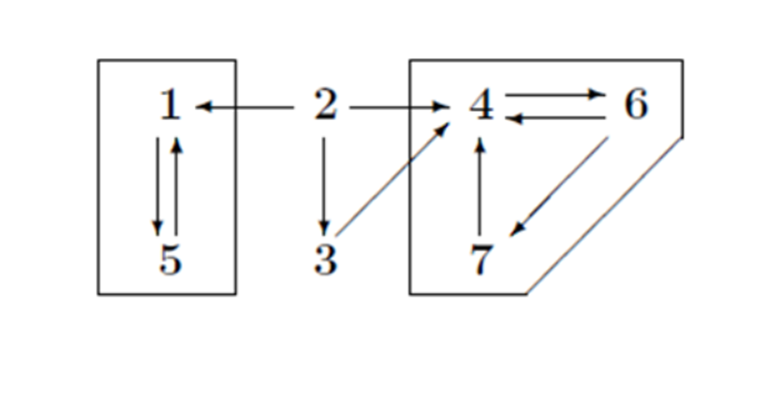
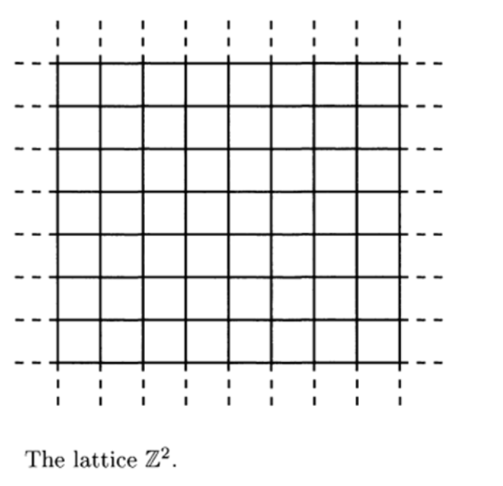

Stochastic Process
Preliminary Definitions
Definition: A sample space, \( \Omega \), is a set of possible outcomes of a random experiment.
Definition: A stochastic process is a family of random variables,
where \( t \) usually denotes time. That is, at every time \( t \) in the set \( T \), a random number \( X(t) \) is observed.
Definition: \( \{ X(t) : t \in T \} \) is a discrete-time process if the set \( T \) is finite or countable.
In practice, this generally means \( T = \{0, 1, 2, 3, \ldots\} \).
Thus a discrete-time process is \( \{ X(0), X(1), X(2), X(3), \ldots \} \): a random number associated with every time \( 0, 1, 2, 3, \ldots \).
Definition: \( \{ X(t) : t \in T \} \) is a continuous-time process if \( T \) is not finite or countable.
In practice, this generally means \( T = [0, \infty) \), or \( T = [0, K] \) for some \( K \).
Thus a continuous-time process \( \{ X(t) : t \in T \} \) has a random number \( X(t) \) associated with every instant in time.
(Note that \( X(t) \) need not change at every instant in time, but it is allowed to change at any time; i.e., not just at \( t = 0, 1, 2, \ldots \), like a discrete-time process.)
Definition: The state space, \( S \), is the set of real values that \( X(t) \) can take.
Every \( X(t) \) takes a value in \( \mathbb{R} \), but \( S \) will often be a smaller set: \( S \subseteq \mathbb{R} \). For example, if \( X(t) \) is the outcome of a coin tossed at the time \( t \), then the state space is \( S = \{0, 1\} \).
Definition: The state space \( S \) is discrete if it is finite or countable. Otherwise it is continuous.
Law of Large Numbers
The Weak Law of Large Numbers (WLLN)
Let \( X_1, X_2, \ldots \) be a sequence of independent and identically distributed random variables having mean \( \mu \). Then, for any \( \epsilon > 0 \),
The Central Limit Theorem (CLT)
Let \( X_1, X_2, \ldots \) be a sequence of independent and identically distributed random variables having finite mean \( \mu \) and finite variance \( \sigma^2 \). Then
Borel-Cantelli
The Borel-Cantelli Lemma
Let \( E_1, E_2, \dots \) denote a sequence of events. If
[
\sum_{i=1}^{\infty} P(E_i) < \infty,
]
then
[
P(\text{an infinite number of the } E_i \text{ occur}) = 0.
]
Converse to the Borel-Cantelli Lemma
If \( E_1, E_2, \dots \) are independent events such that
[
\sum_{n=1}^{\infty} P(E_n) = \infty,
]
then
[
P(\text{an infinite number of the } E_n \text{ occur}) = 1.
]
Conditional Expectation
Definition
For jointly discrete random variables \( X \) and \( Y \), the conditional expectation \( E[X | Y = y] \) is:
For jointly continuous \( X \) and \( Y \) with joint density \( f(x, y) \):
Note that \( E[X | Y] \) is a random variable, representing \( E[X | Y = y] \) as a function of \( Y \).
Proposition: Law of Iterated Expectation
For discrete \( Y \):
Markov Chains
Markov Chain Definition
A sequence of random variables \( (X_0, X_1, X_2, \ldots) \) is a Markov chain with state space \( \Omega \) and transition matrix \( P \) if, for all \( n \geq 0 \), and all sequences \( (X_0, X_1, \ldots, X_n, X_{n+1}) \), we have:
Example 1: Gambler's Ruin
Consider a gambling game where on any turn you win $1 with probability \( p = 0.4 \) or lose $1 with probability \( 1 - p = 0.6 \). You adopt the rule to quit playing if your fortune reaches $N. If your fortune reaches $0, the casino stops you.
Let \( X_n \) be your fortune after \( n \) plays. This process has the Markov property: given the current state, past states are irrelevant for predicting the next state \( X_{n+1} \). If you are still playing at time \( n \) (i.e., your fortune \( X_n = i \) with \( 0 < i < N \)), then for any history of your wealth \( i_{n-1}, i_{n-2}, \ldots, i_0 \),
Example 2: Ehrenfest Chain and Transition Matrix
In the Ehrenfest chain, two urns have \( N \) balls. At each step, a ball is picked at random and moved to the other urn. Let \( X_n \) be the number of balls in the "left" urn after \( n \) draws. This has the Markov property:
with \( P(i, j) = 0 \) otherwise. For \( N = 4 \), the transition matrix is:
A transition matrix \( P(i, j) \) defines a Markov chain if:
(i) \( P(i, j) \geq 0 \) (probabilities).
(ii) \( \sum_j P(i, j) = 1 \) (next state is certain).
Example 3: Wright-Fisher Model
Consider a population of \( N/2 \) diploid individuals (or \( N \) haploid individuals) with genes of type \( A \) or \( a \). The population at time \( n+1 \) is obtained by drawing with replacement from the population at time \( n \). Let \( X_n \) be the number of \( A \) alleles at time \( n \). Then \( X_n \) is a Markov chain with transition probability:
where the right-hand side is the binomial distribution for \( N \) independent trials with success probability \( i/N \).
Multistep Transition Probabilities
The transition probability \( p(i, j) = P(X_{n+1} = j \mid X_n = i) \) gives the probability of going from state \( i \) to state \( j \) in one step. Our goal is to compute the probability of going from \( i \) to \( j \) in \( m > 1 \) steps:
This \( p^m(i, j) \) is the \( m \)-th power of the transition matrix \( p \).
Theorem: (Chapman-Kolmogorov Equation)
The \( m \)-step transition probability satisfies:
For \( n = 1 \), this becomes \( p^{m+1}(i, j) = \sum_k p^m(i, k) p(k, j) \), meaning the \( m+1 \)-step probability is the \( m \)-step probability times \( p \).

Proof
Consider the probability of transitioning from state \( i \) to state \( j \) in \( m+n \) steps, and split it at time \( m \):
Apply conditional probability to the joint event:
Using the Markov property, the future depends only on the current state at time \( m \):
Also, \( P(X_m = k \mid X_0 = i) = p^m(i, k) \). Thus:
which is \( p^{m+n}(i, j) \), completing the proof.
Example: Gambler's Ruin
The transition probability for the gambler's ruin with \( N = 4 \) (from Example 1) is:
Compute \( p^2 \):
- \( p^2(0, 0) = 1 \), \( p^2(4, 4) = 1 \) (absorbing states).
- \( p^2(1, 3) = (0.4)^2 = 0.16 \), going up twice.
- \( p^2(1, 1) = (0.4)(0.6) = 0.24 \), from 1 to 2 to 1.
- \( p^2(1, 0) = 0.6 \), first jump to 0.
Thus:
The limiting matrix is:
Classification of States
Definition: Probability Under Initial Condition
For a stochastic process with state \( X_0 \), the notation \( P_x(A) \) represents the probability of event \( A \) given that the process starts in state \( x \):
Definition: Stopping Time A random variable \( T \) is a stopping time if the event \( \{ T = n \} \) (the occurrence of "we stop at time \( n \)") can be determined by the values of the process up to time \( n \): \( X_0, \ldots, X_n \). For \( T_y = \min\{ n: X_n = y \} \),
Theorem (Strong Markov Property):
Suppose \( T \) is a stopping time. Given \( T = n \) and \( X_T = y \), the future states \( X_{T+k} \) (for \( k \geq 0 \)) behave like a Markov chain with initial state \( y \), independent of \( X_0, \ldots, X_T \).
Definition (Communication Between States):
We say that state \( x \) communicates with state \( y \), and write \( x \to y \), if there is a positive probability of reaching \( y \) starting from \( x \):
where \( T_y \) is the first time the chain reaches state \( y \).
Lemma on Transitivity of Communication
If \( x \to y \) and \( y \to z \), then \( x \to z \).
Proof:
Since \( x \to y \), there exists an \( m \) such that \( p^m(x, y) > 0 \). Similarly, there exists an \( n \) such that \( p^n(y, z) > 0 \). By the Chapman-Kolmogorov equation, \( p^{m+n}(x, z) \geq p^m(x, y) p^n(y, z) > 0 \), so \( x \to z \).
Theorem on Transience
If \( \rho_{xy} > 0 \) but \( \rho_{yx} < 1 \), then \( x \) is transient.
Proof Let \( K = \min\{ k : p^k(x, y) > 0 \} \), the smallest number of steps to get from \( x \) to \( y \). Since \( p^K(x, y) > 0 \), there exists a sequence \( y_1, \ldots, y_{K-1} \) such that:
Since \( K \) is minimal, all \( y_i \neq y \), and we have:
so \( x \) is transient.
Lemma on Recurrence and Communication
If \( x \) is recurrent and \( \rho_{xy} > 0 \), then \( \rho_{yx} = 1 \).
Proof:
If \( \rho_{yx} < 1 \), then by the Theorem on Transience, \( x \) would be transient, a contradiction.
Remark
The Theorem on Transience allows us to identify all transient states when the state space is finite.
Definition of a Closed Set: A set \( A \) is closed if it is impossible to get out, i.e., if \( i \in A \) and \( j \notin A \) then \( p(i, j) = 0 \).
In this Example with Specific States \( \{1, 5\} \) and \( \{4, 6, 7\} \) are closed sets. Their union, \( \{1, 4, 5, 6, 7\} \) is also closed. One can add 3 to get another closed set \( \{1, 3, 4, 5, 6, 7\} \). Finally, the whole state space \( \{1, 2, 3, 4, 5, 6, 7\} \) is always a closed set.

Definition of an Irreducible Set: A set \( B \) is called irreducible if whenever \( i, j \in B \), \( i \) communicates with \( j \).
The irreducible closed sets in the Example on Gambler's Ruin with Specific States are \( \{1, 5\} \) and \( \{4, 6, 7\} \). The next result explains our interest in irreducible closed sets.
Theorem (Recurrence in Finite Irreducible Sets)
If \( C \) is a finite closed and irreducible set, then all states in \( C \) are recurrent.
Theorem (Decomposition of Finite State Space)
If the state space \( S \) is finite, then \( S \) can be written as a disjoint union \( T \cup R_1 \cup \cdots \cup R_k \), where \( T \) is a set of transient states and the \( R_i \), \( 1 \leq i \leq k \), are closed irreducible sets of recurrent states.
Recurrence Properties
-
If \( x \) is recurrent and \( x \to y \), then \( y \) is recurrent.
-
In a finite closed set there has to be at least one recurrent state.
-
\( y \) is recurrent if and only if
where \( E_y N(y) \) is the expected number of visits to \( y \) starting from \( y \).
Stationary Distributions
Suppose \( \vec{\pi} \) is a limiting probability vector, i.e., for some initial probability vector \( \vec{v} \),
Then
We call a probability vector \( \vec{\pi} \) an invariant probability distribution for \( \mathbf{P} \) if
Such a \( \vec{\pi} \) is also called a stationary, equilibrium, or steady-state probability distribution. Note that an invariant probability vector is a left eigenvector of \( \mathbf{P} \) with eigenvalue 1.
Lemma
If a stationary distribution exists, then [ \lim_{n \to \infty} \mathbf{P}^n = \begin{bmatrix} \vec{\pi} \ \vec{\pi} \ \vdots \ \vec{\pi} \end{bmatrix}, ]
Example: (General two state transition probability)
Let us start by considering the two-state Markov chain with
where \( 0 < p, q < 1 \). This matrix has eigenvalues 1 and \( 1-p-q \). We can diagonalize \( \mathbf{P} \),
where
The columns of \( \mathbf{Q} \) are right eigenvectors of \( \mathbf{P} \), and the rows of \( \mathbf{Q}^{-1} \) are left eigenvectors. The eigenvectors are unique up to a multiplicative constant.
We choose the left eigenvector for eigenvalue 1 to be a probability vector. \( \vec{\pi} = (q/(p+q), p/(p+q)) \) is the unique invariant probability distribution for \( \mathbf{P} \). Once \( \mathbf{P} \) is diagonalized, we can compute powers:
This simplifies to:
Since \( |1-p-q| < 1 \), we have:
The key is that the second eigenvalue \( 1-p-q \) has absolute value less than 1, so the dominant contribution to \( \mathbf{P}^n \) comes from the eigenvalue 1, i.e., the invariant probability distribution.
Irreducible
A transition matrix \( \mathbf{P} \) is called irreducible, if for any \( x, y \in \Omega \), there exists a number \( n \) (possibly depending on \( x, y \)) such that
Definition
For any \( x \in \Omega \), define \( T(x) = \{ n \geq 1 : P^n(x, x) > 0 \} \). The period of state \( x \) is the greatest common divisor of \( T(x) \), denoted by \( \gcd(T(x)) \).
Lemma
If \( \mathbf{P} \) is irreducible, then \( \gcd(T(x)) = \gcd(T(y)) \) for all \( x, y \in \Omega \).
Aperiodic
Definition
For an irreducible chain, the period of the chain is defined to be the period which is common to all states. The chain is aperiodic if all states have period 1.
Example
Consider a simple random walk on an \( N \)-cycle where \( N \) is odd. Then the walk is irreducible and aperiodic.
Theorem
If \( \mathbf{P} \) is irreducible and aperiodic, then there exists an integer \( r \) such that
Definition
For \( x \in \Omega \), define
1- \( \tau_x \): the hitting time for \( x \).
2- \( \tau_x^+ \): the first return time when \( X_0 = x \).
Lemma
Suppose that \( P \) is irreducible. Then, for any \( x, y \in \Omega \), we have
Perron-Frobenius Theorem (for Finite-State Markov Chains)
Suppose that \( P \) is irreducible, then there exists a probability measure \( \pi \) such that \( \pi = \pi P \) and \( \pi(x) > 0 \) for all \( x \in \Omega \).
Theorem
Suppose that \( P \) is irreducible. Then there exists a unique stationary distribution. Moreover,
Theorem (Convergence Theorem)
Suppose that \( p \) is irreducible, aperiodic, and has a stationary distribution \( \pi \). Then as \( n \to \infty \): [ p^n(x, y) \to \pi(y). ]
Definition:
Given a graph \( G = (V, E) \), we define simple random walk on \( G \) to be the Markov chain with state space \( V \) and transition matrix:
Theorem:
Let
Then \( \pi \) is a stationary distribution for the simple random walk on the graph.
Countable Markov Chain
Definition:
Let \( \Omega \) be a countable state space and \( P \) the transition matrix. A stochastic process \( (X_n)_{n \geq 0} \) is a Markov chain if for all states \( x, y \in \Omega \),
i.e., the future state depends only on the present state.
Chapman-Kolmogorov Equation (Countable Markov Chain):
Let \( S \) be a countable state space. The n-step transition probabilities are defined by:
For \( 0 < m, n < \infty \), the Chapman-Kolmogorov equation states:
This expresses that the probability of transitioning from state \( x \) to \( y \) in \( m+n \) steps equals the sum over all intermediate states \( z \in S \), of the probability of transitioning from \( x \) to \( z \) in \( m \) steps and then from \( z \) to \( y \) in \( n \) steps.
Example 1 (Random Walk with Partially Reflecting Boundary at 0):
Let \( 0 < p < 1 \), and let \( S = \{0, 1, 2, \dots\} \). The transition probabilities are:
This describes a random walk on \( S \) with a partially reflecting boundary at 0.

Example 2 (Simple Random Walk on the Integer Lattice):
Let \( \mathbb{Z}^d \) be the d-dimensional integer lattice:
Each \( x \in \mathbb{Z}^d \) has \( 2d \) nearest neighbors at distance 1. A simple random walk on \( \mathbb{Z}^d \) is a Markov chain \( (X_n) \) with state space \( S = \mathbb{Z}^d \), where the process moves uniformly to one of the \( 2d \) nearest neighbors. The transition probabilities are:

Recurrence and Transience
Let \( X_n \) be an irreducible Markov chain with countably infinite state space \( S \) and transition probabilities \( p(x, y) \).
Definition (Recurrence): The chain \( X_n \) is said to be recurrent if, for each state \( x \in S \),
That is, the chain returns to the state \( x \) infinitely often with probability 1.
Definition (Transience): If a state \( x \in S \) is not recurrent, it is called transient. In this case, the chain visits \( x \) only a finite number of times almost surely.
Now, fix a state \( x \) and assume \( X_0 = x \). Define the random variable \( R \) to be the total number of visits to state \( x \), including the initial visit:
where \( I\{\cdot\} \) denotes the indicator function. Then the expected number of visits to state \( x \), assuming \( X_0 = x \), is given by:
Let \( T = \min\{n > 0 : X_n = x\} \) denote the time of first return to state \( x \). Then:
1- If \( \mathbb{P}^x\{T < \infty\} = 1 \), the chain always returns to \( x \) and is recurrent.
2- If \( \mathbb{P}^x\{T < \infty\} = q < 1 \), the chain returns with probability less than 1 and is transient.
In the transient case, the number of returns \( R \) is a geometric random variable with success probability \( 1 - q \), and its expectation is:
Fact: An irreducible Markov chain is transient if and only if the expected number of returns to a state is finite. That is,
Example: Recurrence of the Simple Random Walk on \( \mathbb{Z}^d \)
Case \( d = 1 \)
We begin with the one-dimensional case. The state space is \( \mathbb{Z} \), and the transition probabilities are given by:
Assuming the walk starts at the origin (\( X_0 = 0 \)), and noting that the chain has period 2, we have:
To compute \( p_{2n}(0, 0) \), observe that the walker must take exactly \( n \) steps to the right and \( n \) steps to the left. The number of such paths is \( \binom{2n}{n} \), each with probability \( (1/2)^{2n} \). Therefore:
Applying Stirling’s approximation,
we obtain the asymptotic estimate:
Hence, the total return probability is:
Conclusion: The simple random walk on \( \mathbb{Z} \) is recurrent.
Case \( d > 1 \)
Now consider the simple random walk on \( \mathbb{Z}^d \) for \( d > 1 \), with transition probabilities:
Assume the walk starts at the origin. After \( 2n \) steps, by the law of large numbers, approximately \( 2n/d \) of the steps are expected in each coordinate direction.
From the one-dimensional result, the probability that a single coordinate returns to zero is approximately:
Assuming independence across dimensions, the total return probability becomes:
To determine recurrence, we analyze:
This series:
We conclude:
Therefore, the simple random walk on \( \mathbb{Z}^d \) is:
- Recurrent for \( d = 1, 2 \)
- Transient for \( d \geq 3 \)
Continuous Time Markov Chains
There is another type of Markov process, and that is the continuous Markov process.
Definition: Continuous-Time Markov Chain
Let \( (X_t)_{t \geq 0} \) be a continuous-time Markov chain. We say that \( (X_t)_{t \geq 0} \) is a continuous-time Markov chain if for all times \( 0 \leq t_1 \leq t_2 \leq \cdots \leq t_{n+1} \) and all \( x_1, x_2, \dots, x_{n+1} \in \Omega \), we have:
Moreover, the right-hand side depends only on \( (t_{n+1} - t_n) \).
Definition: Semigroup of the Chain
Suppose that \( (X_t)_{t \geq 0} \) is a continuous-time Markov chain. Define the transition probabilities as:
The semigroup \( (P_t)_{t \geq 0} \) of the chain is defined as follows:
- \( P_0 = I \) (identity matrix),
- \( P_t \) is a stochastic matrix,
- \( P_{t+s} = P_t P_s \).
Example 1: Poisson Process is Markovian
The Poisson process is a continuous-time Markov chain with transition probabilities:
Example 2: Discrete-Time Markov Chain as Continuous-Time Process
Let \( (\hat{X}_n)_{n \geq 0} \) be a discrete-time Markov chain with transition matrix \( Q \), and let \( (N_t)_{t \geq 0} \) be an independent Poisson process with intensity \( \lambda > 0 \). Define \( X_t = \hat{X}_{N_t}, t \geq 0 \). Then \( (X_t)_{t \geq 0} \) is a continuous-time Markov chain with transition probabilities:
Theorem (Holding Time Exponentially Distributed):
Let \( X_0 = x \), and define the holding time at \( x \) as:
Then \( S_x \) has an exponential distribution.
Theorem (Memoryless Property of Exponential Distribution)
Let \( T \) be a positive random variable. \( T \) has the memoryless property if:
if and only if \( T \) has an exponential distribution.
References
-
Lawler, Gregory F. (2006). Introduction to Stochastic Processes. CRC Press.
-
Durrett, Rick (2010). Essentials of Stochastic Processes. 2nd Edition, Version Beta. Cambridge University Press.
-
MIT OpenCourseWare (2015). Introduction to Stochastic Processes - Spring 2015. Lecture Notes - MIT OCW.
-
Ross, Sheldon M. (2014). Stochastic Processes. Second Edition, University of California, Berkeley.
-
University of Auckland (2020). COURSE NOTES: STATS 325 - Stochastic Processes. Department of Statistics, University of Auckland.
Author(s)

Abdollah Zohrabi
Teaching Assistant